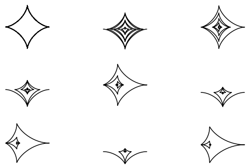
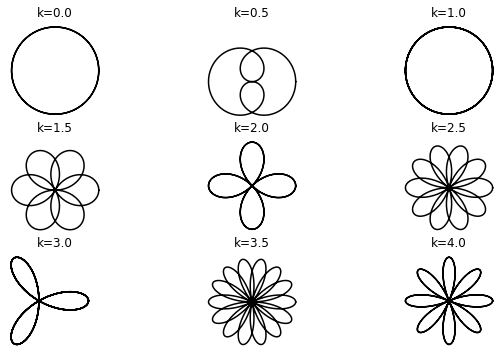
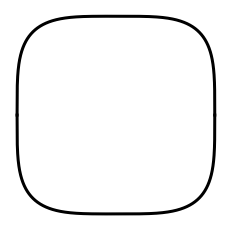
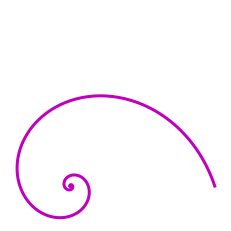
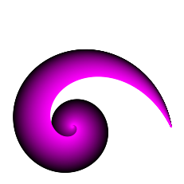

Art from Trigonometry¶
import numpy as np
import matplotlib.pyplot as plt
1 Astroid radial curve¶
t = np.linspace(-6*np.pi,6*np.pi,1000)
a = t
x = a * np.cos(t)**3
y = a * np.sin(t)**3
plt.plot(x,y,'m',linewidth=3)
plt.axis('off')
plt.axis('square')
plt.show()
1.1 Exercise¶
fig,ax = plt.subplots(3,3,figsize=(10,6))
row, col = np.indices((3, 3))
for i in range(9):
x = t**i * np.cos(t)**3
y = t**i * np.sin(t)**3
r = row.ravel()[i]
c = col.ravel()[i]
ax[r,c].plot(x,y,'k')
ax[r,c].axis('off')
ax[r,c].axis('square')
ax[r,c].set_xlabel('a=t$^%s$'%i)
plt.show()

2 Rose curves¶
k = 2
# If k is an integer, the curve will be rose-shaped with
# 2k petals if k is even, and
# k petals if k is odd.
t = np.linspace(0,4*np.pi,1000)
x = np.cos(k*t) * np.cos(t)
y = np.cos(k*t) * np.sin(t)
plt.plot(x,y,'m',linewidth=3)
plt.axis('square')
plt.axis('off')
plt.show()
2.1 Exercise¶
fig,ax = plt.subplots(3,3,figsize=(10,6))
row, col = np.indices((3, 3))
for i in range(9):
k = i/2
x = np.cos(k*t) * np.cos(t)
y = np.cos(k*t) * np.sin(t)
r = row.ravel()[i]
c = col.ravel()[i]
ax[r,c].plot(x,y,'k')
ax[r,c].axis('off')
ax[r,c].axis('square')
ax[r,c].set_title('k=%s'%k)
plt.show()

3 Squircle¶
x = np.linspace(-1,1,2001)
y = ( 1 - x**4 )**(1/4)
plt.plot(x,y,'k',linewidth=3)
plt.plot(x,-y,'k',linewidth=3)
plt.axis('square')
plt.axis('off')
plt.show()

4 Logarithmic spiral¶
t = np.linspace(0,10*np.pi,1000)
k = -3
x = np.cos(t) * np.exp(t/k)
y = np.sin(t) * np.exp(t/k)
plt.plot(x,y,'m',linewidth=3)
plt.axis('square')
plt.axis('off')
plt.show()

4.1 Exercise¶
N = 150
# eds = exponential decays
eds = np.linspace(-6,-2,N)
for i in range(N):
x = np.cos(t) * np.exp(t/eds[i])
y = np.sin(t) * np.exp(t/eds[i])
plt.plot(x,y,color=[i/N,0,i/N])
plt.axis('square')
plt.axis('off')
plt.show()
